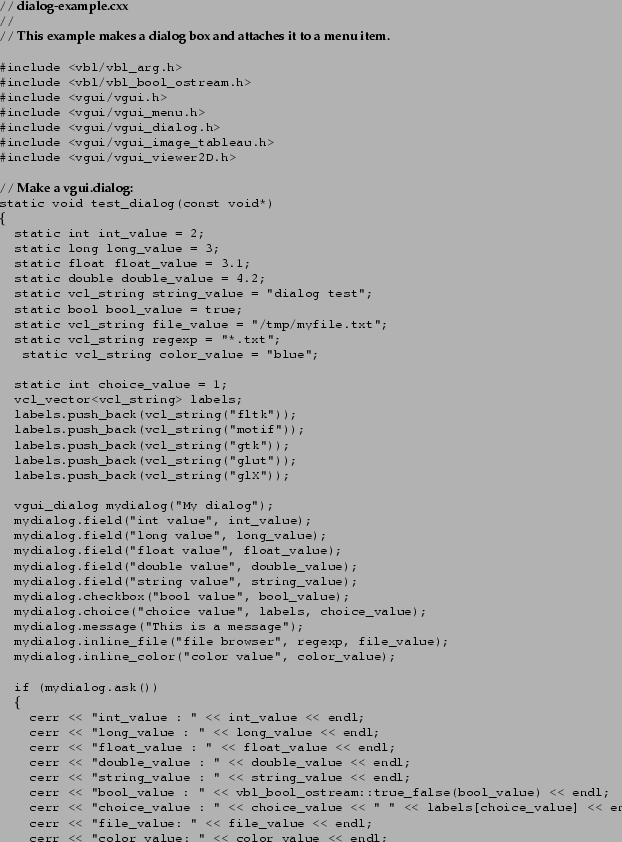

When a mouse button is pressed it produces an event which is passed to the handle_impl function of the tableau. In order to use a mouse event we need to write our own tableau which is derived from a vgui_tableau.
In this next example we get the mouse position when the left mouse button is pressed on the image. The mouse position is given in viewport coordinates with the lower-left corner as the origin. (In general the viewport will be the area displaying OpenGL).

We can use this to draw a line onto the image. In this next example a line is drawn between two points selected by pressing the left mouse button.